| Ana, the seasoned sniper and nurturing healer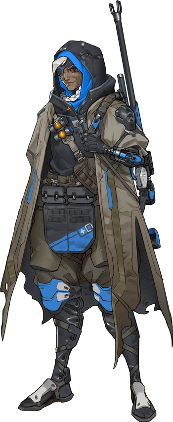 |
Ashe, the sharpshooting outlaw with a penchant for dynamite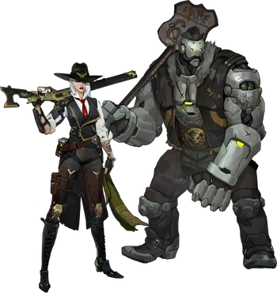 |
Echo, the adaptive AI with a versatile skillset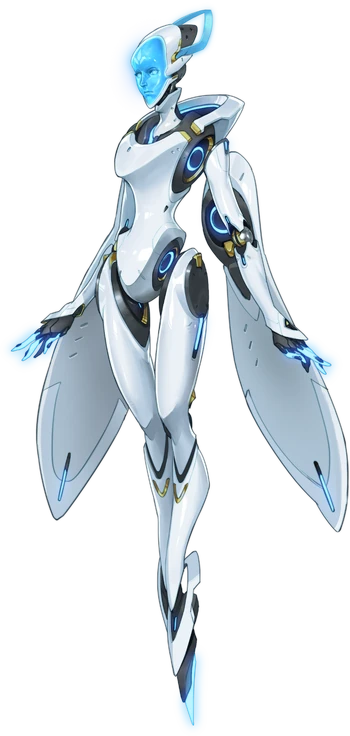 |
Genji, the cybernetic ninja seeking redemption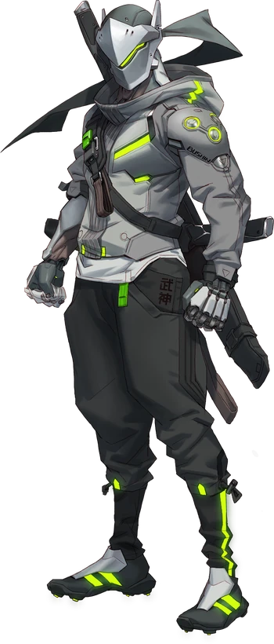 |
Junkrat, the explosive-obsessed anarchist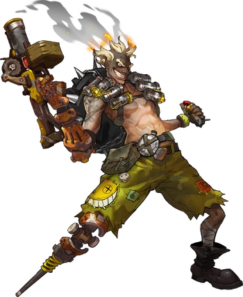 |
| Kiriko, the enigmatic combat medic mastering her powers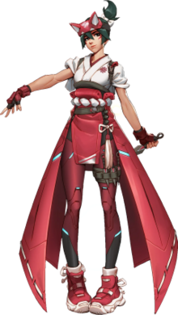 |
Mei, the brilliant climatologist wielding ice and ingenuity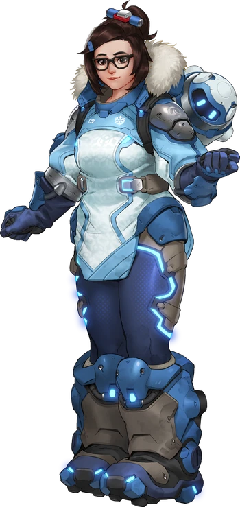 |
Mercy, the compassionate healer with angelic abilities, mending wounds and reviving fallen allies with her staff and Valkyrie suit.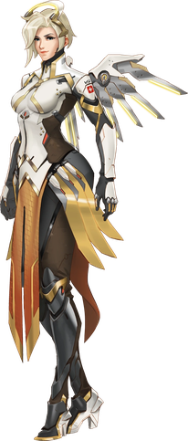 |
Doomfist, the imposing leader with a fist of doom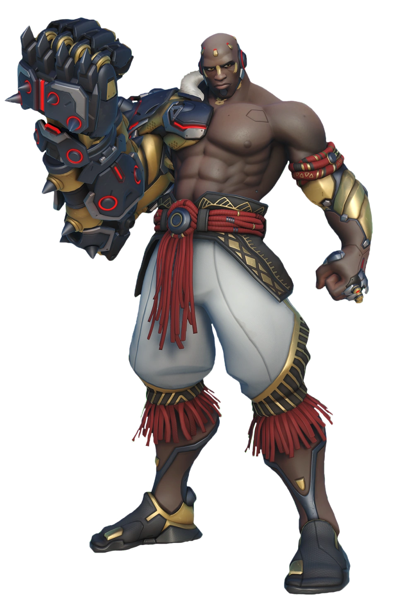 |
D.Va, the pro gamer turned mech pilot defending her homeland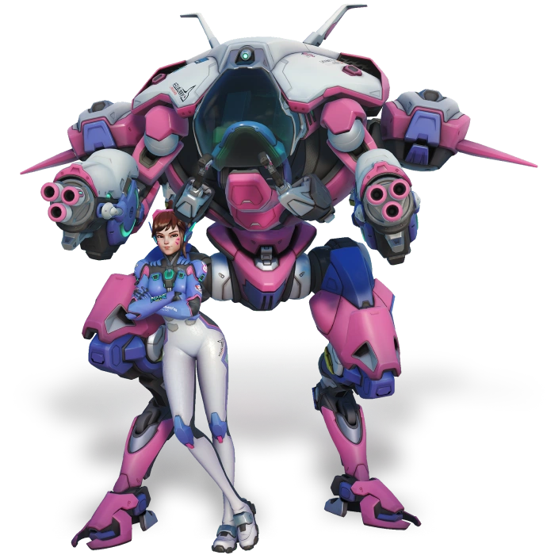 |
| Hanzo, the skilled archer torn between honor and duty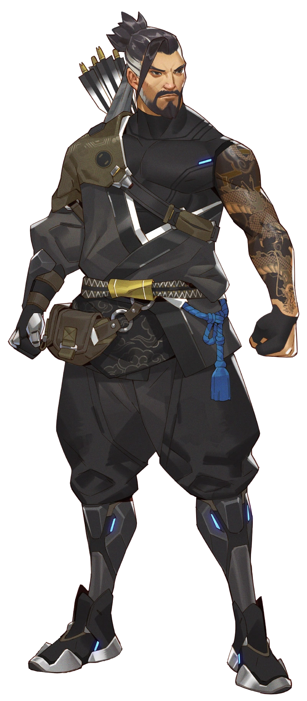 |
Cassidy, the vigilante gunslinger enforcing justice with his trusty Peacekeeper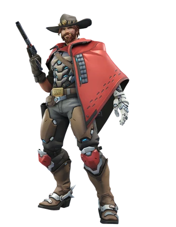 |
Sombra, the stealthy hacker disrupting enemy plans with her cyber skills |
Bastion, the sentient omnic transforming between robot and turret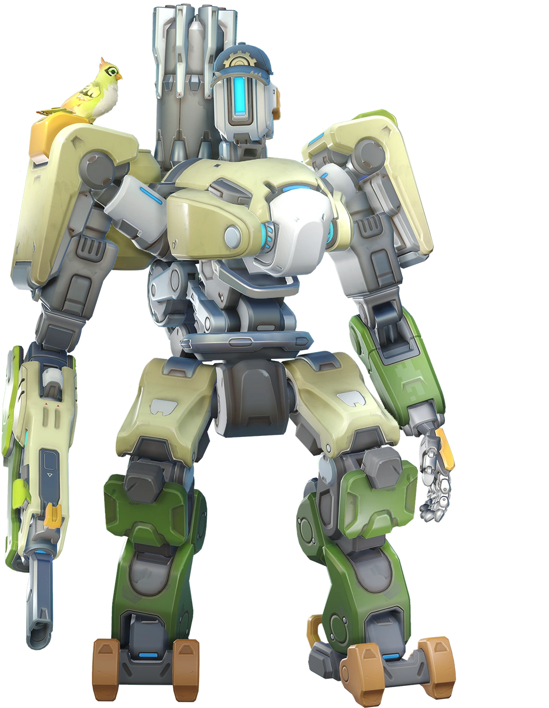 |
Pharah, the aerial ace and protector of the innocent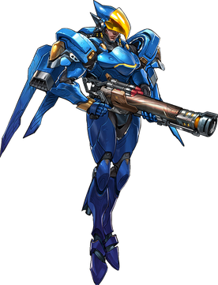 |
| Rammatra, the enigmatic shaman-warrior, harnessing elemental powers to protect her people and unleash devastating storms against her foes,
embodying the spirit of resilience and valor in battle.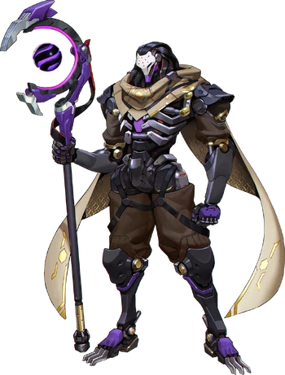 |
Reaper, the ruthless mercenary with a thirst for vengeance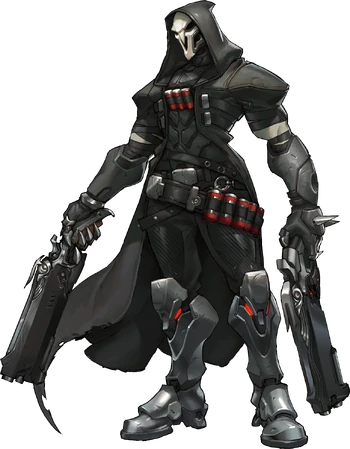 |
Reinhardt, the noble crusader wielding a massive rocket hammer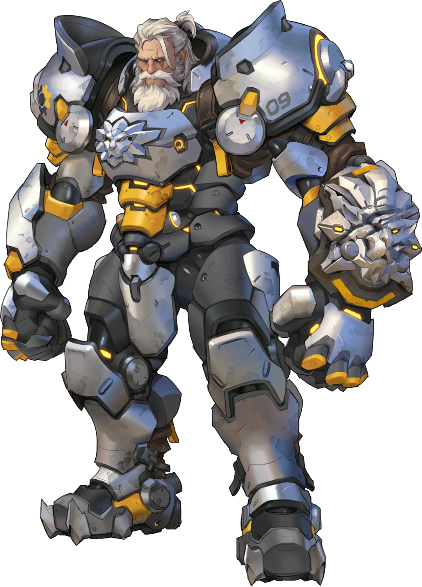 |
Roadhog, the brutal enforcer wreaking havoc with his chain hook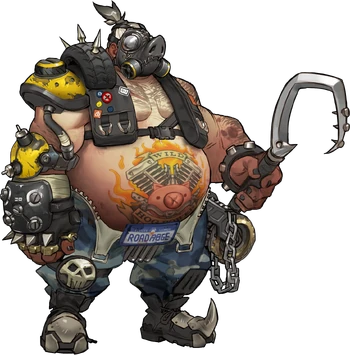 |
Soldier: 76, the grizzled soldier fighting for justice with his tactical visor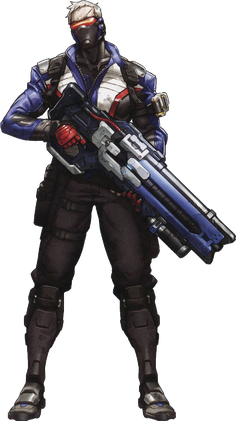 |
| Symmetra, the architect manipulating reality with her hard-light constructs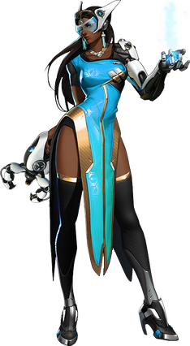 |
Tracer, the energetic adventurer zipping through time with her chronal accelerator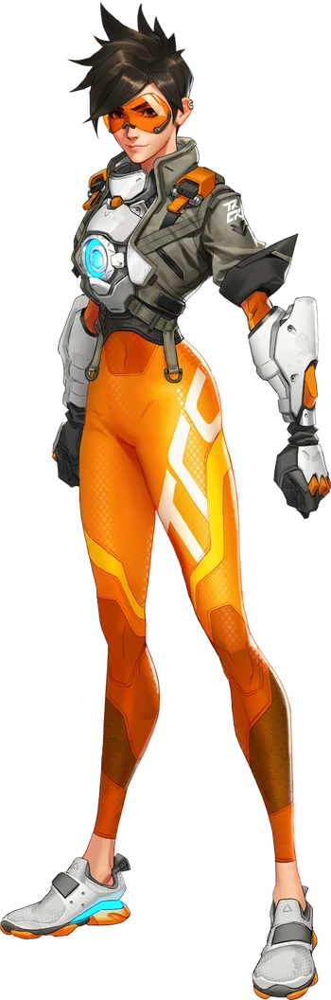 |
Widowmaker, the deadly assassin striking fear from the shadows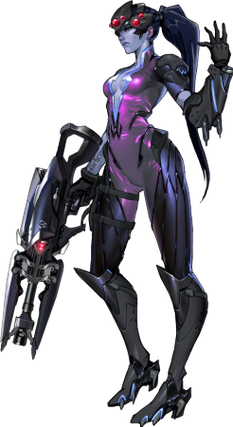 |
Zarya, the powerhouse defender harnessing the energy of the cosmos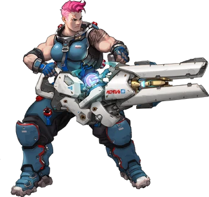 |
Zenyatta, the tranquil omnic monk promoting harmony and enlightenment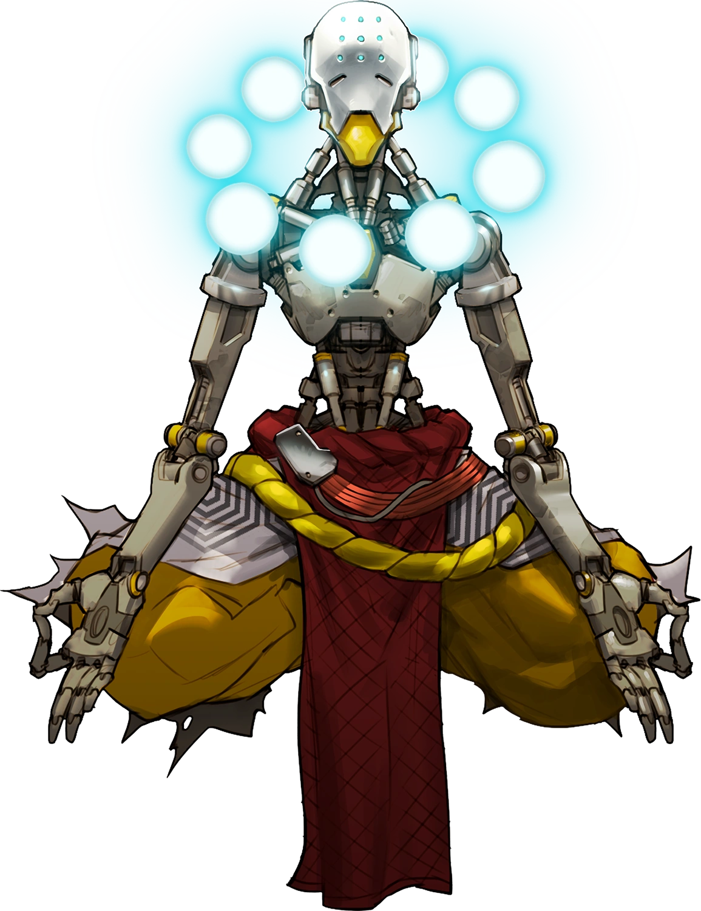 |